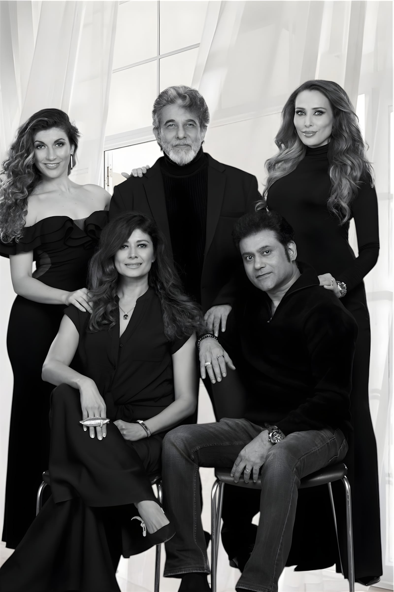

Best Actor · Cannes 2026
"Deepak Tijori wins Best Actor for Echoes of Us at the French Riviera Film Festival in Cannes — the studio's flagship short crowned on the Croisette."
French Riviera Film FestivalMay 2026

Synopsis
A heartfelt story of love, loss and second chances. Two strangers, bound by what is no longer there.
Joe Rajan's chamber piece moves with a patient camera through the rooms of memory — letting absence speak louder than presence. Deepak Tijori and Iulia Vantur lead a small ensemble told in close-up, in a film that examines one of the quietest but most devastating forms of heartbreak.
Co-produced by Alliance Media Pty Ltd with Pooja Batra, the short collected 88+ international festival laurels and earned back-to-back screenings at the 79th Cannes Film Festival and the French Riviera International Film Festival in May 2026 — where Tijori took Best Actor (Founders Award).
In the press
"Deepak Tijori wins Best Actor for Echoes of Us at the French Riviera Film Festival in Cannes — the studio's flagship short crowned on the Croisette."
French Riviera Film FestivalMay 2026"From its very first moments, Echoes of Us draws you in with a breathtaking opening shot — the camera glides gracefully from the exterior of the mansion into Arjun's home."
Rodartin Cinema ViewMedium"English short film Echoes Of Us bags 3 major awards in Florida — #EchoesOfUs shines."
Taran AdarshTrade analyst"Global acclaim for Echoes of Us — the award-winning short film set for prestigious Cannes and French Riviera screenings."
FirstpostEntertainment desk"Echoes of Us sweeps top short film honors at South Asian International Film Festival Florida 2026."
The Indian EyeFestival report"The success of Echoes of Us reflects a growing appetite for authentic storytelling that transcends borders."
Hemant DinkarSAIFFF Florida · Feb 2026Cast & direction
Joe Rajan directs Deepak Tijori opposite Iulia Vantur and Alessandra. Tijori's performance has carried the film to 22 Best Actor honours worldwide — capped by Best Actor (Founders Award) at the French Riviera Film Festival in Cannes, May 2026.

Selected coverage
Four projects in development — from literary adaptation to true-story drama.